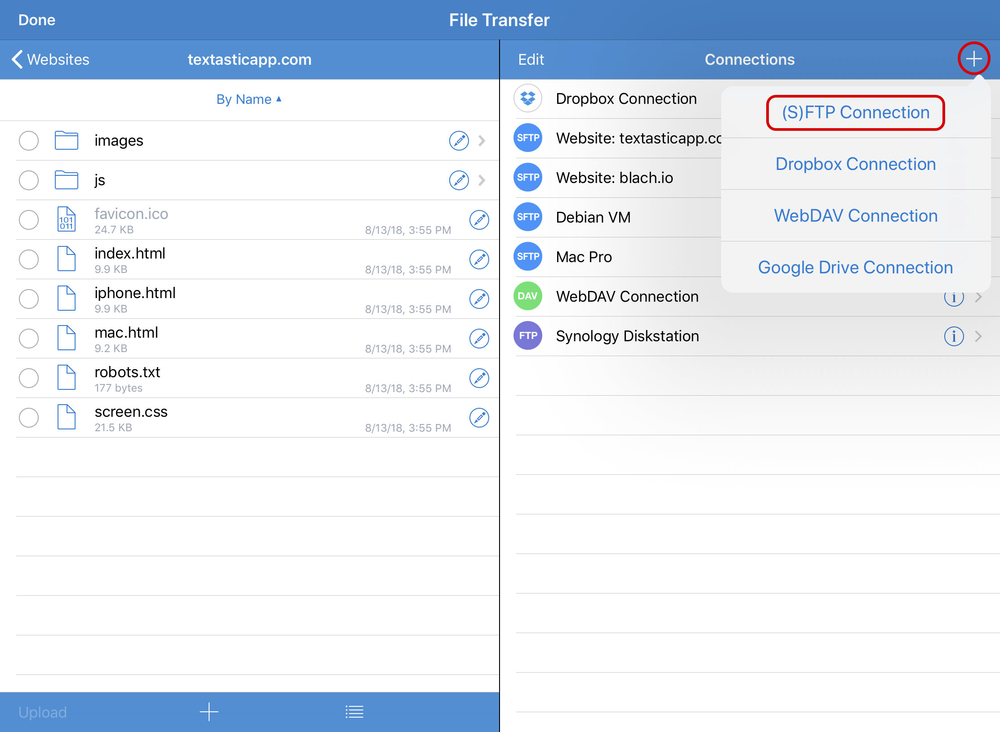

SFTP, FTPS, and FTP connections
Add an (S)FTP Connection
After opening the File Transfer screen, tap on the + button and choose (S)FTP Connection to add a new connection.
{kind=link}
Then you can configure a new FTP (Unencrypted), FTPS (FTP over SSL), FTPES (FTP over Explicit Auth SSL) or SFTP (SSH File Transfer Protocol) connection.
Configure an FTP (Unencrypted) Connection
Choose the FTP (Unencrypted) Protocol.
{kind=link}
Configure the connection by setting the Host name (this can be a domain name like “example.com” or an IP address), a User name and a Password.
If you check Ask for Password, you do not need to enter a password. Instead, Textastic will ask for the password when connecting to the server.
Important
Make sure that the host name does not include a protocol like “ftp://” or a slash “/” after the host name or the connection won’t work.
You can also add a custom Title that will appear in the connection list and choose another port than the standard port 21.
If you enter a Path, Textastic will use this as the root path when connecting to the server.
Choose the correct character Encoding you want to use for this connection. This setting depends on your server’s configuration.
By default, Textastic uses up to three concurrent Connections when uploading or downloading multiple files. If your FTP server only allows a single connection, you can set this to “1” instead of “3”.
If you encounter connection problems with the standard Passive (EPSV/PASV) Connection Mode, try to use Active (EPRT/PORT)` instead.
Enable the Show Hidden Files setting if you want to see hidden remote files like .htaccess.
Configure an FTPS (FTP over SSL) or FTPES Connection
For FTPS / FTP over SSL connections, most settings are the same as for regular FTP connections (see above). Notice the different default port 990.
{kind=link}
You can also choose FTPES (FTP over Explicit Auth SSL) as the protocol which defaults to port 21.
FTPS adds a Verify SSL Certificate. Disable this if you use a self-signed certificate on the server.
Configure an SFTP (SSH) Connection
SFTP (SSH File Transfer Protocol) is a subsystem of SSH (Secure Shell). You can use this connection type to securely transfer files between your server and Textastic. For more information have a look at SSH File Transfer Protocol (Wikipedia)
The default port for SFTP connections is 22.
{kind=link}
Textastic usually switches to the root directory after establishing an SFTP connection. If you want to start at the user’s home directory instead, enter ~/ in the Path field.
You can either use user/password authentication or public key authentication:
User/Password authentication
Enter your user name and password as you would for a regular FTP connection, but disable the Public Key Auth. setting.
Public Key Authentication
Enter the user name and enable the Public Key Auth. setting. Now you can enter the path to the private key file.
Important
The private key file must be stored somewhere in Local Files.
For this to work, you need to transfer the private key file for your SSH account into Textastic. You can do this for example by using Dropbox, Google Drive or the built-in WebDAV server (via Wi-Fi).
You can also use the Files app and move the private key file into a folder in “On my iPad/iPhone” -> Textastic or use iTunes File Sharing.
The standard settings expect a private key file named id_rsa in a subfolder called ssh
in Local Files in Textastic (see screenshot).
If your private key file is protected with a passphrase, Textastic uses the password setting to retrieve the private key.
Note
Textastic supports RSA, DSA, ECDSA, and Ed25519 keys.
Key File Format
Textastic expects the key file to be in the format which is used by the
OpenSSH utility ssh-keygen as well as the OpenSSL command line tool. It supports
the new OpenSSH private key format as well as the PEM format. When using
ssh-keygen, the file is usually called id_rsa while with openssl, it is usually called private.pem.
If you instead have a key in PuTTY’s format (.ppk), you can use PuTTYgen to convert it to OpenSSH/PEM format:
Visit the PuTTY website and download puttygen.exe (on your PC). Open it, and using the File menu, load your .ppk file that you already use, and type in your passphrase. Now go to the Conversions menu and export the key as an OpenSSH key. You can now use the converted key with Textastic.
Debugging Connection Problems
If you encounter connection problems, you can enable the Debug Log setting. This will create detailed log files in the “logs” directory in Textastic. Note that this logs all traffic for this connection, so only enable this for debugging purposes and make sure to disable it again as soon as possible.
{kind=link}
{kind=link}
Change Connection Settings
You can change the settings of a connection by tapping on the i button on the right side of a connection.
{kind=link}